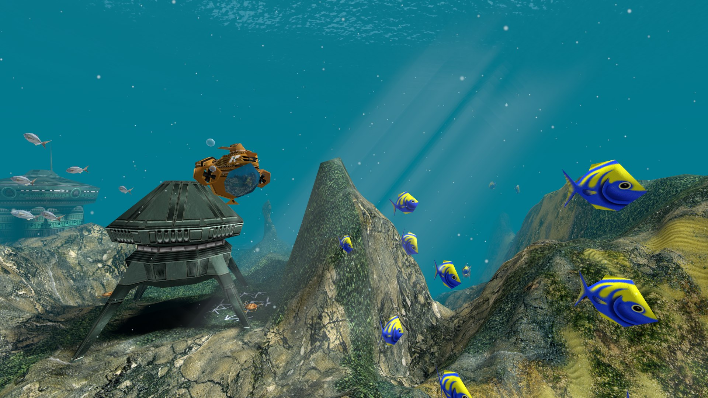
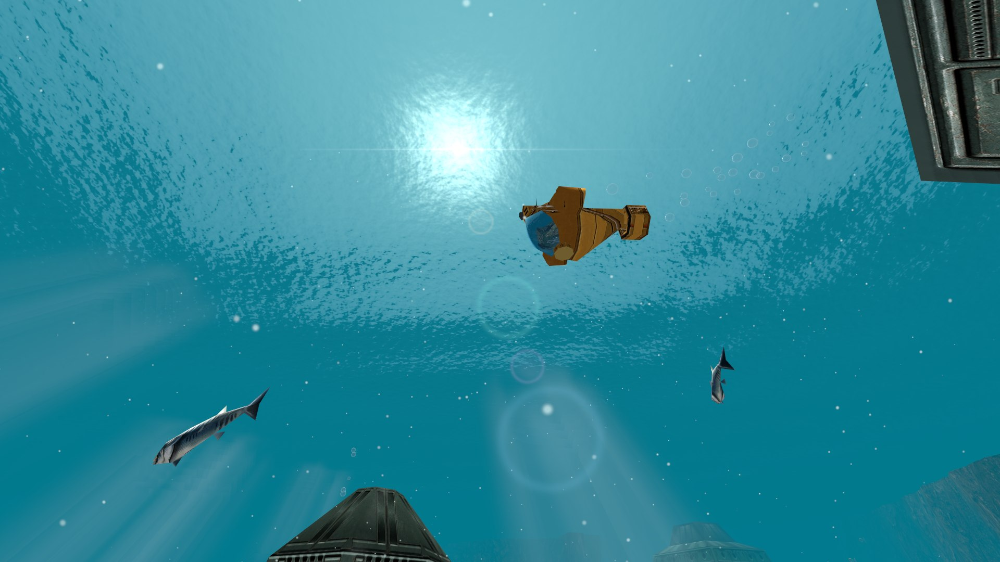
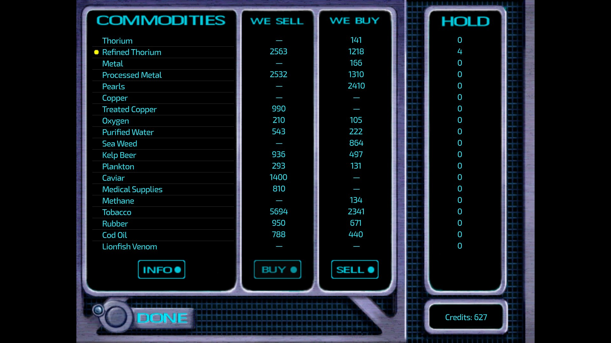
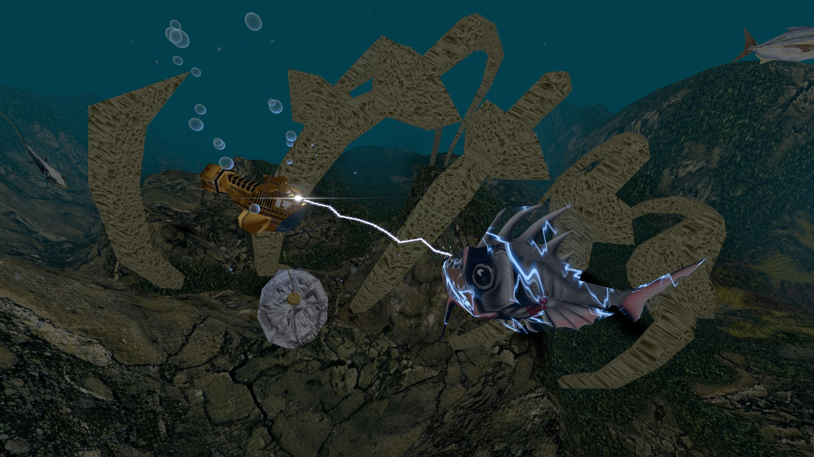

Explore the seabed
Travel between submerged cities, thread through rocky caves, and encounter wildlife and civilian subs along the way.
The classic underwater adventure returns
OpenSC brings Criterion Games’ Sub Culture to modern Windows PCs with an open-source Godot engine. Pilot your tiny sub once again in this open world trading, combat and exploration game.
Windows x64 · Requires the original game files

The game

Travel between submerged cities, thread through rocky caves, and encounter wildlife and civilian subs along the way.

Collect pearls and mysterious artifacts discarded by humans, trade at dockside markets, and spend your credits on equipment for your next dive.

Pick up jobs at underwater settlements and use your sub’s equipment to tackle everything from espionage to rescue operations.
Mods and source
OpenSC supports mods that replace models, textures and other assets and includes a built in mod manager.
Windows setup
Have your original Sub Culture game files handy. OpenSC loads them from the folder you select on first launch.
Get the latest releaseDownload it from the latest GitHub release and extract it to a folder.
Launch the executable from the extracted folder.
When prompted, choose the folder containing your original Sub Culture files.